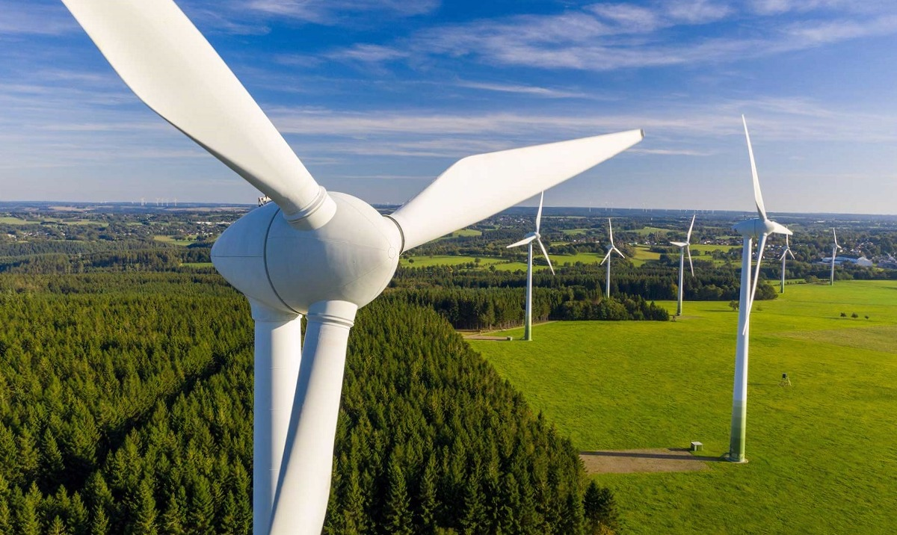
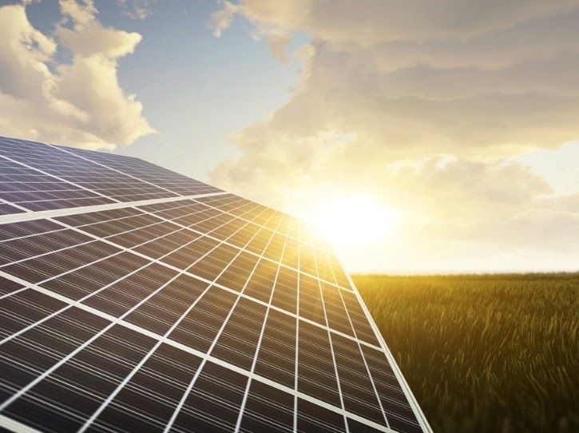

La energía mareomotriz es uno de los diferentes tipos de energías renovables que existen en la actualidad, y se caracteriza por generar electricidad a partir del movimiento de las corrientes y mareas oceánicas.
Según National Geographic, generalmente, esta energía se produce por la diferencia de altura entre las mareas altas y bajas, que es aprovechada por plantas de producción de energíadiseñadas para transformar la energía cinética del agua en energía eléctrica.
La primera planta de energía mareomotriz se desarrolló a finales de los años 60 en el estuario del río Rance, en Francia, y actualmente es la segunda planta más grande del mundo en producir este tipo de energía renovable. Esta planta tiene la capacidad de producir hasta 240 megavatios (MV), utilizando un sistema de turbinas y generadores que aprovechan el movimiento del río.
A diferencia de otros tipos de energía renovable, como la fotovoltaica y la eólica, la energía mareomotriz se produce de manera permanente, ya que se basa en la previsibilidad de mareas oceánicas
Los aerogeneradores han de orientarse en la dirección del viento esto sucede gracias a una veleta que se encuentra en la góndola. A partir de ahí, la fuerza de las corrientes de aire pondrá en funcionamiento las tres principales partes del aerogenerador:
Actualmente, existen tres tipos de centrales mareomotrices, y se están llevando a cabo proyectos de investigación para aumentar el número de plantas con capacidad de generar electricidad a partir del movimiento de las mareas. Estas son:

Otro tipo de central mareomotriz es la presa de marea, que aprovecha el ascenso y descenso de las mareas para generar electricidad. Para esto, se debe construir una barrera o un dique en una zona donde las diferencias entre las mareas altas y las mareas bajas sea significativa.
El sistema de compuertas de este tipo de planta mareomotriz permite contener grandes niveles de agua, que luego se liberan y mueven las turbinas conectadas al generador eléctrico. El mejor ejemplo de una presa de marea es la de la planta de energía del río Rance, de la que ya hablamos antes.
En estas centrales se combinan diferentes elementos de las centrales que se mencionan en los puntos anteriores. Estas centrales implican la construcción de estructuras en forma de T, paralelas a la costa, que aprovechan el movimiento de las mareas, independientemente de su dirección.
Estas plantas están equipadas con turbinas bidireccionales, lo que les permite generar energía tanto cuando la marea sube como cuando baja.

Este tipo de central mareomotriz se caracteriza por generar electricidad a partir de las corrientes marinas. Es decir, implica la instalación de turbinas submarinas en áreas donde las corrientes marinas son más fuertes y abundantes.
El movimiento de la marea, en una sola dirección, mueve las turbinas y convierte la energía cinética en energía eléctrica. La primera central de energía mareomotriz de este tipo se construyó en 2007 en el norte de Irlanda, y desde entonces ha crecido el interés en el uso de los generadores de corriente de marea.
.png)
Es una forma de aprovechar la diferencia de temperatura entre las aguas superficiales y las aguas más profundas del océano. Esta se puede utilizar mediante dos métodos principales:
Ciclos termodinámicos de agua caliente y fría: Se bombea agua caliente desde la superficie del océano para evaporar un fluido de trabajo. Luego, el agua fría del fondo del océano se utiliza para condensar el vapor, completando el ciclo.
Evaporación y condensación de un fluido de trabajo: Se utiliza la diferencia de temperatura entre la superficie del océano y las aguas profundas para evaporar y condensar un fluido. La presión generada por el cambio de fase del fluido se utiliza para accionar una turbina y generar electricidad.
El principal uso de la energía mareomotriz es la generación de electricidad, ya que este tipo de centrales se han venido desarrollando con el propósito de diversificar las fuentes de energía renovable, y disminuir la dependencia de los combustibles fósiles.
En el año 2011, en Corea del Sur se terminó la construcción de la planta de producción de energía mareomotriz más grande del mundo, la Sihwa Lake Tidal Power Station. Esta planta tiene una capacidad de producción de 550 GWh, y provee de energía eléctrica a más de 500 mil personas.
Este tipo de plantas se integran a la red eléctrica con el propósito de suplir las necesidades de energía eléctrica de diferentes comunidades. Además, contribuyen a reducir el uso de los combustibles fósiles y las emisiones de CO2 a la atmósfera.
En el caso de Corea del Sur, la planta del lago Sihwa también cumple otros propósitos, ya que sirve como barrera para evitar inundaciones, e impacta de forma indirecta sobre la capacidad de producción agrícola.
Las ventajas de la energía mareomotriz son muy amplias, y por ello cada vez más países quieren invertir en ella. Para empezar, hay que señalar que el agua es cientos de veces más densa que el aire y, por lo tanto, es mucho más efectiva para la producción de energía a través de turbinas.
Asimismo, es importante mencionar que es una energía renovable que no se agota con el tiempo, como sucede con los combustibles fósiles, y que no emite ningún tipo de contaminante mientras genera electricidad.
Estas ventajas son un punto muy importante, y convierten a la energía mareomotriz en una excelente fuente para la producción de electricidad. Sin embargo, no todo es positivo, porque también existen algunas desventajas que es necesario analizar.
Un primer punto en contra, es que no es posible instalar centrales mareomotrices en cualquier lugar, ya que existen zonas donde la amplitud de las mareas es muy baja. Además, de esto, los costes de instalación son muy altos, lo que dificulta la viabilidad económica de este tipo de proyectos para muchos países.
En cuanto al tema ambiental, si bien no es contaminante, sí puede afectar los ecosistemas locales. Según National Geographic, las presas de marea afectan la salinidad del agua, bloquean el paso de los peces, que también pueden quedar atrapados en las aspas de las turbinas.
En muchos casos, algunas especies marinas se ven forzadas a migrar, porque las centrales de energía mareomotriz afectan significativamente el ecosistema.